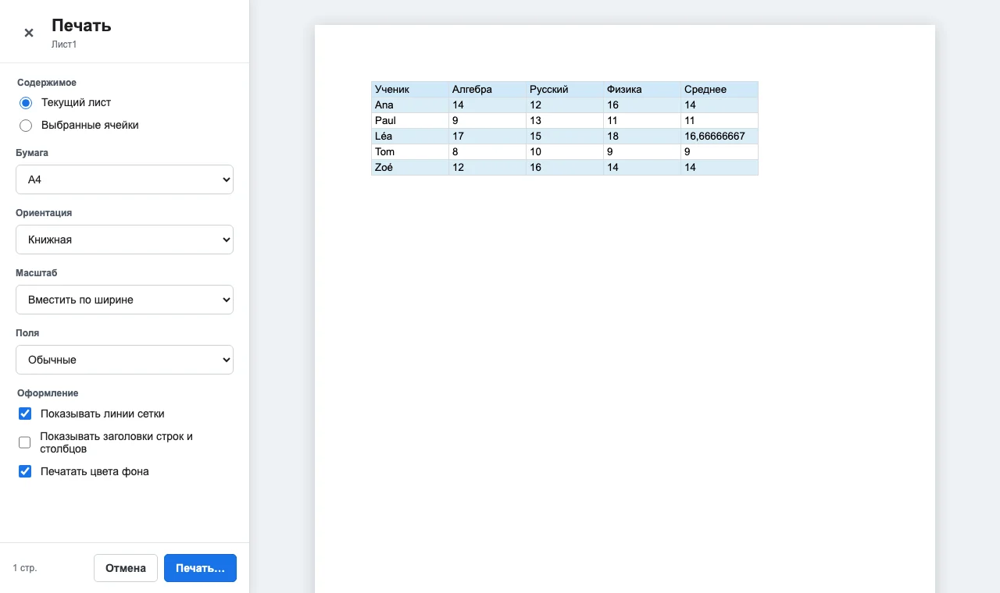

Печать
Файл › Печать… или Ctrl P показывает страницы такими, какими они будут напечатаны.

| Настройка | Варианты |
|---|---|
| Содержимое | текущий лист или ячейки, выделенные до открытия окна |
| Бумага | A4, Letter |
| Ориентация | книжная, альбомная |
| Масштаб | Фактический размер; Вместить по ширине: все столбцы на ширине одной страницы; Вместить на одной странице |
| Поля | обычные, узкие, широкие |
| Оформление | сетка, заголовки строк и столбцов, цвета фона |
Печать… открывает окно браузера, где выбирают принтер или сохранение в PDF.
- Печатаются только ячейки с оформлением: без диаграмм, изображений и спарклайнов.
- Скрытые строки и столбцы не печатаются.
- Флажок печатается как TRUE или FALSE.
- За один раз печатается один лист.
Чтобы напечатать с диаграммами, сохраните книгу и откройте её в Excel или LibreOffice.